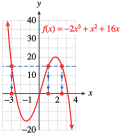

If we sketch in the horizontal line \(y = 15\text{,}\) we can see that there are three points on the graph of \(f\) that have \(y\)-coordinate \(15\text{,}\) as shown below. The \(x\)-coordinates of these points are the solutions of the equation.

From the graph, we see that the solutions are \(x = -3\text{,}\) \(x = 1\text{,}\) and approximately \(x = 2.5\text{.}\) We can verify each solution algebraically.
For example, if \(x = \alert{-3}\text{,}\) we have
\begin{equation*}
\begin{aligned}[t]
f(\alert{-3})\amp= -2(\alert{-3})3 + (\alert{-3})^2 + 16(\alert{-3})\\
\amp= -2(-27) + 9 - 48\\
\amp =54 + 9 - 48 = 15
\end{aligned}
\end{equation*}
so \(-3\) is a solution. Similarly, you can check that \(x = 1\) and \(x = 2.5\) are solutions.